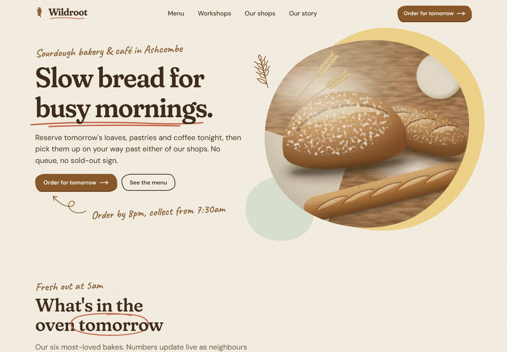

Design exploration / Organic / hand-drawn
Wildroot
Hand-drawn warmth meets a practical bakery pre-order, collection, and workshop-booking flow.

The idea behind the interface.
A fictional sourdough bakery and café with a welcoming, organic identity. Illustrated marks, irregular image masks, and handwritten notes sit above a working pre-order-for-collection app, with a separate phone-friendly workflow for bakery staff.
Inside the build
- Customers choose a shop, collection date, time slot, and products, with allergen filtering and an order cut-off.
- Stock and workshop seats are reserved under per-key locks; a declined simulated payment releases the reservation.
- Staff tools manage bake quantities, collections, daily specials, and closures, alongside a reusable thirty-illustration SVG set.
Scope & context
Concept project. Payments and notifications are simulated, the staff area has no authentication, and in-memory demo data resets with the server.